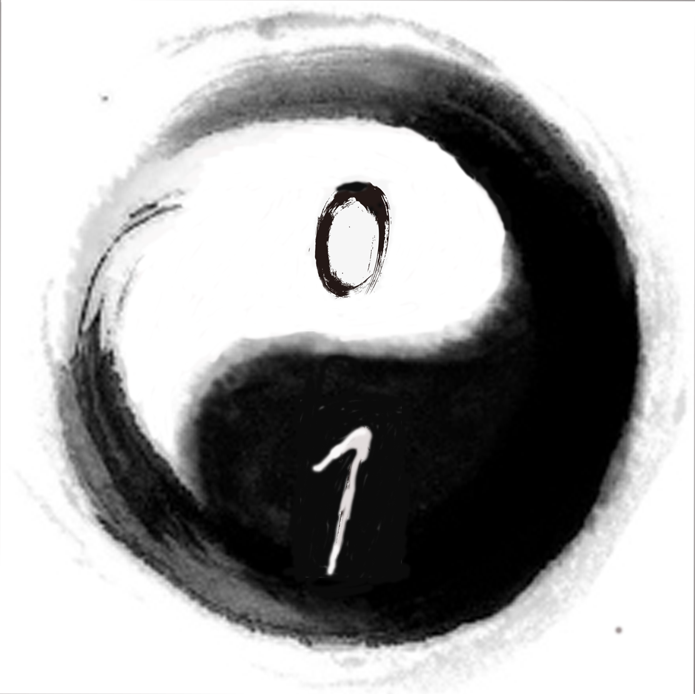

Factorial
Compute n!
Go Back
Go Forward
Step-by-Step Animation
Animation Speed
Elaboration:
?
Factorial:
The product of all the postitive numbers from 1 to n (inclusive).
n! = n · (n - 1) · (n - 2) · (n - 3) ··· 3 · 2 · 1
0!= 1
Recursive Approach:
factorial(n) =
{
n * factorial(n - 1) n > 1
1 n <= 1
阶乘定义：
一个正整数的阶乘是所有小于及等于该数的正整数的积，并且0的阶乘为1。自然数n的阶乘写作n!。
n! = n · (n - 1) · (n - 2) · (n - 3) ··· 3 · 2 · 1
0!= 1
Recursion Approach:
factorial(n) =
{
n * factorial(n - 1) n > 1
1 n <= 1
Script